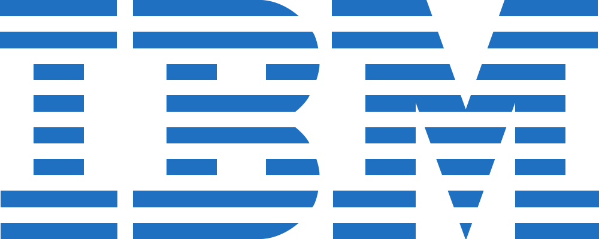
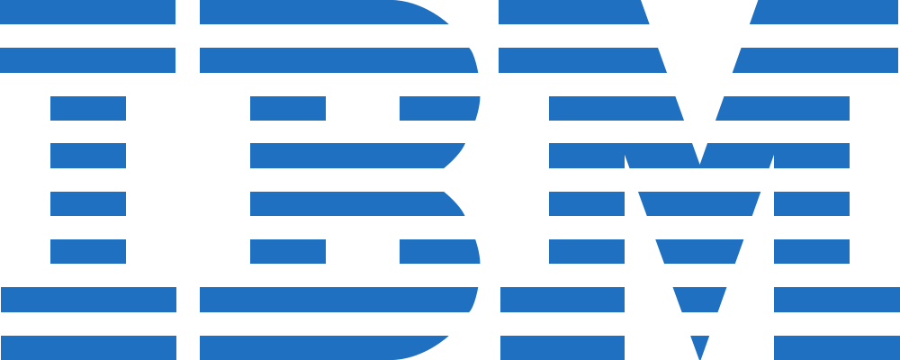

Vi anbefaler disse service løsninger fordi...
Dropsuite forenkler databeskyttelse, så du kan fokusere på at levere, hvad din virksomhed gør bedst; giver værdi og vækst. Sikkerhedskopiering af Office 365, G Suite Gmail, Hosted Exchange, Open-Xchange, IMAP / POP og websteder.
Microsoft 365 kickstarter dine projekter med et bredt udvalg af foruddefinerede skabeloner til Word, Excel, PowerPoint, Publisher og Access. OneDrive for Business er en central hub til alle dine filer. Upload, organiser, og del nemt dokumenter med andre både i og uden for din organisation.
Kaspersky Small Office Security er specielt designet til små kontorer, der ønsker at fokusere på øget indtjening og samtidig vil have ro i sindet med hensyn til deres IT-sikkerhed med beskyttelse, der er overkommelig og pålidelig.
PersondataSupport er en digital værktøjskasse, hvor virksomheder finder redskaber til kortlægning, kontroller, risikovurderinger, analyser, log og dokumentation.

Vi anbefaler disse service løsninger fordi...
Azure kan anvendes af alle virksomhedsstørrelser. Fordelene er, at det understøtter hvilket som helst styresystem og det samme gælder for de programmer og tjenester der udvikles. Ved at anvende Azure betaler din virksomhed kun ud fra jeres reelle forbrug, og ikke for ressourcer i ikke bruger.
Acronis-produkter er sikre, omkostningseffektive og usædvanligt lette at bruge - selvom du ikke er en IT-ekspert. De tilbyder komplet databeskyttelse, sikker filadgang / synkroniserings- / delingsløsninger og systemstyringsværktøjer, der er egnede til ethvert miljø - fra små lokale virksomheder til størrer virksomheder.
Nexetic sikkerhedskopierer dine serveres filer automatisk til Nexetic's sikre sky. Hvis du har hardwarefejl eller mister filer, kan du gendanne med Nexetic med blot et enkelt klik på en knap. Sikkerhedskopiering af databaser understøttes også.
PersondataSupport er en digital værktøjskasse, hvor virksomheder finder redskaber til kortlægning, kontroller, risikovurderinger, analyser, log og dokumentation.

Vi anbefaler disse service løsninger fordi...
Azure kan anvendes af alle virksomhedsstørrelser. Fordelene er, at det understøtter hvilket som helst styresystem og det samme gælder for de programmer og tjenester der udvikles. Ved at anvende Azure betaler din virksomhed kun ud fra jeres reelle forbrug, og ikke for ressourcer i ikke bruger.
Dropsuite forenkler databeskyttelse, så du kan fokusere på at levere, hvad din virksomhed gør bedst; giver værdi og vækst. Sikkerhedskopiering af Office 365, G Suite Gmail, Hosted Exchange, Open-Xchange, IMAP / POP og websteder.
Letsignit er markedets ledende manager af email-signaturer gør det nemt at skabe, tildele og administrere signaturer og bannere i Office 365 og på Google konti fra et centralt sted. Letsignit forvandler emails til et stærkt og omkostningseffektivt kommunikationsværktøj.
Mimecast tilbyder cloud-baserede tjenester inden for e-mailsikkerhed, -arkivering og -continuity som én fuldt integreret abonnementstjeneste, der både omfatter beskyttelse og komplet risikostyring. Mimecast mindsker de risici, der er forbundet med at bruge e-mail, og sikrer – på grund af overflødiggørelsen af de mange punktløsninger, der traditionelt bruges til at beskytte e-mails og disses data – at tingene bliver mindre komplekse samt billigere.
PersondataSupport er en digital værktøjskasse, hvor virksomheder finder redskaber til kortlægning, kontroller, risikovurderinger, analyser, log og dokumentation.
TeamViewer har fokus på cloud-baserede teknologier til at aktivere online fjernsupport og -samarbejde globalt. For at kunne begå sig nu og i de kommende år har virksomheder og privatpersoner behov for fjernsupport til skrivebordet, fjernadgang og onlinesamarbejde for at kunne være opkoblet overalt i verden. TeamViewer går forrest i denne udvikling.
 



Vi anbefaler disse service løsninger fordi...
Microsoft 365 samler Office 365, Windows 10 og Enterprise Mobility + Security. Det kombinerer produktivitetsapps, der er de bedste i sin klasse, med intelligente skytjenester, der transformerer måden, du arbejder på.
Dropsuite forenkler databeskyttelse, så du kan fokusere på at levere, hvad din virksomhed gør bedst; giver værdi og vækst. Sikkerhedskopiering af Office 365, G Suite Gmail, Hosted Exchange, Open-Xchange, IMAP / POP og websteder.
FlowForma den førende udbyder af Business Process Management (BPM)-værktøjer til Microsoft Office 365® har revolutioneret det traditionelle BPM-marked med en innovativ tilgang til udvikling af prisbelønnede BPM-produkter, der gør det muligt for brugere at gøre oprettelsen og effektiviseringen af processer smartere og hurtigere ved at udnytte den velkendte SharePoint-platform – uden kodning.
IBM er førende inden for cloud-baserede platforme og kognitive løsninger. IBM, som blev grundlagt i 1911 og har været i konstant udvikling siden, er verdens største teknologi- og rådgivervirksomhed med over 380.000 medarbejdere og kunder i 170 lande. Med sin datadrevne AI-platform for virksomheder – Watson – udvikler virksomheden branchebaserede løsninger på virkelige problemer.
PersondataSupport er en digital værktøjskasse, hvor virksomheder finder redskaber til kortlægning, kontroller, risikovurderinger, analyser, log og dokumentation.
Parallels har fokus på cloud-baserede teknologier til at aktivere online fjernsupport og -samarbejde globalt. For at kunne begå sig nu og i de kommende år har virksomheder og privatpersoner behov for fjernsupport til skrivebordet, fjernadgang og onlinesamarbejde for at kunne være opkoblet overalt i verden. TeamViewer går forrest i denne udvikling.
Swiftpage udbyder digitale markedsføringsløsninger og CRM-løsninger, der får virksomheder til at vokse. Swiftpages løsninger inden for e-mailbaseret markedsføring, markedsføring via sociale medier samt customer relationship management hjælper virksomheder med at konvertere kundeemner, fastholde kunder og hurtigt opnå vækst.


Vi anbefaler disse service løsninger fordi...
Microsoft 365 samler Office 365, Windows 10 og Enterprise Mobility + Security. Det kombinerer produktivitetsapps, der er de bedste i sin klasse, med intelligente skytjenester, der transformerer måden, du arbejder på.
AvePoint er Microsoft Cloud-eksperten. Mere end 15.000 selskaber og 5 millioner cloud-brugere anvender AvePoint til at styrke migration, styring og beskyttelse af deres data i Office 365 og SharePoint. Avepoints integrerede softwareløsninger til skyen, hybridmodeller og on-premise understøttes af virksomhedens 24/7-support. AvePoint er en Microsoft Global ISV Partner og har tre gange vundet prisen som Microsoft Partner of the Year.
DocuSign forandrer måden at drive virksomhed på ved at give mere end 250.000 virksomheder og over 100 millioner brugere i 188 lande mulighed for at sende, underskrive og håndtere dokumenter når som helst, hvor som helst og på en hvilken som helst enhed på sikker vis. DocuSign erstatter udskrivning, scanning og fremsendelse af dokumenter pr. fax eller i fysisk form ved indgåelse af forretninger. DocuSign gør det muligt for virksomheder, uanset størrelse, branche og geografi, at gøre alle beslutninger, godkendelser, arbejdsgange og underskrifter fuldt digitale.
IBM er førende inden for cloud-baserede platforme og kognitive løsninger. IBM, som blev grundlagt i 1911 og har været i konstant udvikling siden, er verdens største teknologi- og rådgivervirksomhed med over 380.000 medarbejdere og kunder i 170 lande. Med sin datadrevne AI-platform for virksomheder – Watson – udvikler virksomheden branchebaserede løsninger på virkelige problemer.
Data & More kan du automatisere GDPR- oprydningen nemt og enkelt! Indtil nu har den eneste måde at klare oprydning på at gøre det manuelt– men nu er der kommet nye løsninger på markedet, der stort set automatiserer oprydningen og sikrer dokumentation af jeres data-compliance. I skal bare vælge den løsning fra Data & More, der passer til jeres kunders behov. Den letteste løsning kræver ingen installation, løsningen scanner og markerer de mails og vedhæftninger, der indeholder sensitive data helt automatisk. Dine kunder kan derved spare meget tid og skal bare håndtere de mails, scanningsværktøjet finder sensitive oplysninger i.
BitTitan global leder inden for Managed Services Automation, sætter tjenesteudbydere og IT-folk i stand til effektivt at vurdere, indføre og administrere teknologiløsninger i en cloud first-verden. Med MSPComplete, en automatiseringsplatform for IT-tjenester, kan IT-folk organisere, optimere og automatisere leveringen af tjenester samt etablere aktiviteter, der kan gentages og skaleres og som er rentable og leverer problemfri kundeoplevelser. I mere end ti år har BitTitan været en disruptor i cloud-branchen og har med succes leveret IT-tjenester til mere end 6,5 millioner medarbejdere hos 30.000 kunder i 150 lande.
TeamViewer har fokus på cloud-baserede teknologier til at aktivere online fjernsupport og -samarbejde globalt. For at kunne begå sig nu og i de kommende år har virksomheder og privatpersoner behov for fjernsupport til skrivebordet, fjernadgang og onlinesamarbejde for at kunne være opkoblet overalt i verden. TeamViewer går forrest i denne udvikling. Virksomheden har den holdning, at der sker vidunderlige ting, når mennesker mødes, og at teknologi bør gøre det muligt for dem at mødes, uanset hvor i verden de befinder sig.